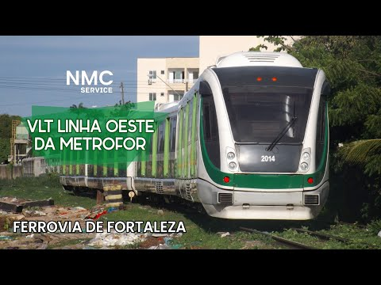
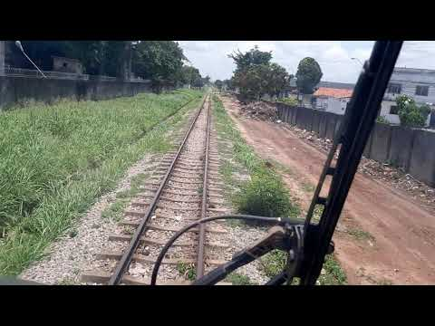

Sentido Caucaia
Saindo de Moura Brasil
| Primeiro | Último | |
|---|---|---|
| Segunda a sexta | 05:30 | 20:00 |
| Sábado | 05:30 | 20:00 |
| Domingo | sem operação | |
Nos dias úteis, passa a cada ~45 min no pico, ~105 min no resto do dia.
VLT · Fortaleza
Caucaia - Fortaleza
10estações
~40 minde ponta a ponta
30viagens por dia útil
R$ 1,00passagem
Passagem: R$ 1,00 (meia R$ 0,50) · só dinheiro.
Saindo de Moura Brasil
| Primeiro | Último | |
|---|---|---|
| Segunda a sexta | 05:30 | 20:00 |
| Sábado | 05:30 | 20:00 |
| Domingo | sem operação | |
Nos dias úteis, passa a cada ~45 min no pico, ~105 min no resto do dia.
Saindo de Caucaia
| Primeiro | Último | |
|---|---|---|
| Segunda a sexta | 05:30 | 20:00 |
| Sábado | 05:30 | 20:00 |
| Domingo | sem operação | |
Nos dias úteis, passa a cada ~45 min no pico, ~90 min no resto do dia.
Horários mais cheios: das 6h às 8h e das 16h às 19h (Relatório de Demanda do Metrofor, 2025).
Domingo: o metrô e o VLT só circulam em dias especiais (eleição, ENEM, eventos), quando o Metrofor anuncia.

Assistir: Metrofor Linha Oeste do VLT de Fortaleza
Assistir: Viagem na cabine do VLT até CaucaiaVídeos públicos do YouTube, de quem gravou e publicou; o crédito é de cada canal. O vídeo só carrega do YouTube quando você toca para assistir.
“No começo dos anos 1980 ainda havia um expresso-de-aço belamente chamado de Sonho Azul”
Pedro Salgueiro, Sonho Azul (2024, crônica (O Povo))
Um estudante compra a passagem na Estação João Felipe e vai de trem para o interior, numa viagem cheia de passageiros, mercadorias e vendedores nos vagões. Era o trem para Teresina, que saía de Fortaleza pela linha do oeste.
2017
No projeto Wholetrain, OsGemeos, ISE e 13 convidados, entre eles os cearenses Grud, Solrac, Doug, Leo BDSS e o coletivo Acidum, pintaram trens da Linha Sul e VLTs da Linha Oeste.
2006–2013
No Dia Nacional do Samba, grupos tocavam na Estação João Felipe e dentro dos vagões, numa viagem de ida e volta até Caucaia, pelo preço da passagem.
Linha SulLinha NordesteVLT Sobral · Linha NorteVLT Sobral · Linha SulVLT CaririVLT Aeroporto